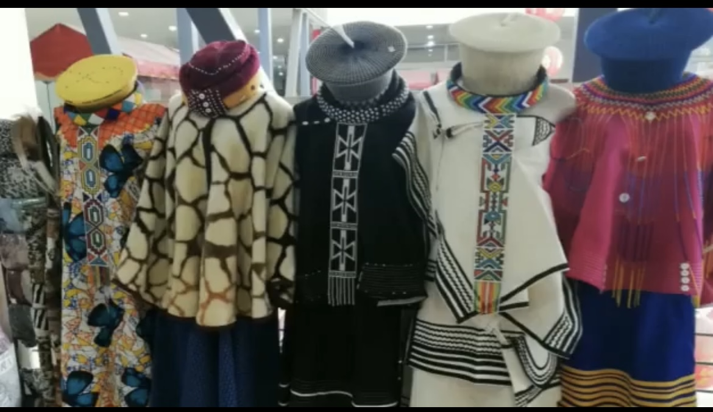
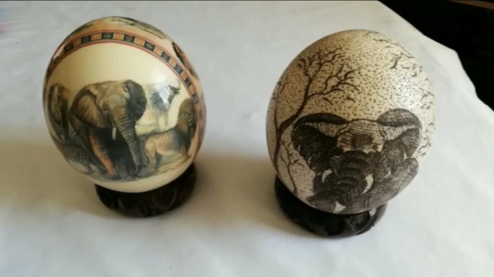
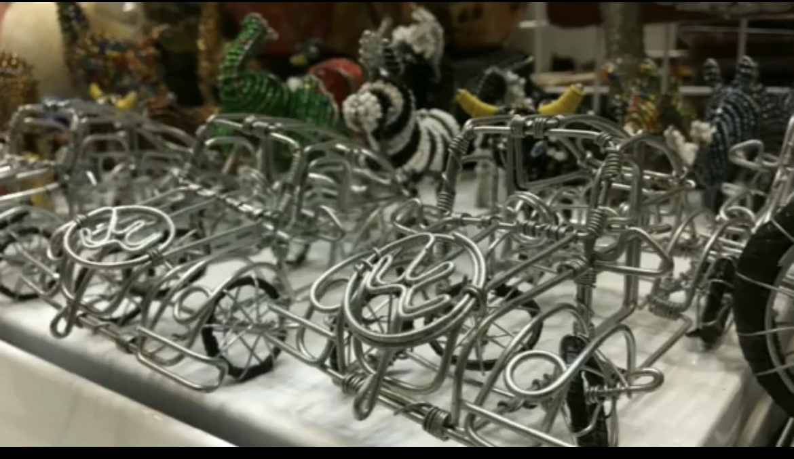
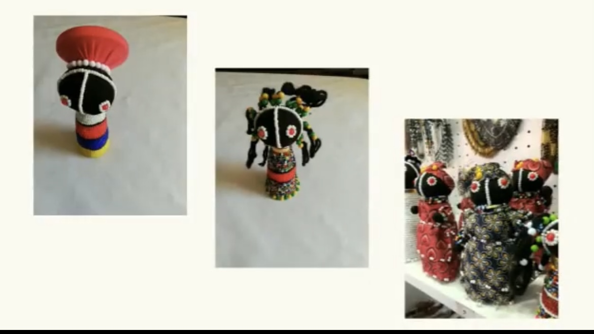

sign up
Wholesale & retail in South Africa. Distributor of all arts & crafts in africa.Modern and historical paintings, sculptures, installations, and other visual culture from native or indigenous Africans and the African continent. Gift|Curios|Beadwork.Shop FP03
Shop now